Using Modules O-Z
Options module
The Options module lets you control and load display options, including font size and modules listed.
There are three tabs: Props, Gui, and Modules.
Props tab
The Props tab allows you to load saved sets of options.
To use the Props tab:
| 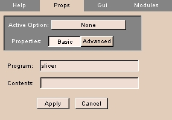 |
- Click the Props tab. The panel at left appears.
- To choose a saved and loaded set of options, click Active Option and select the set of options from the drop-down list.
- Click Basic for basic properties or Advanced for advanced properties.
- Enter the Program name.
- Enter the Contents.
- Click Apply to use the entered settings.
|
Gui tab
The Gui tab allows you to specify the font size.
To use the Gui tab:
| 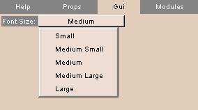 |
- Click the Gui tab. The panel at left appears.
- Click Font Size and select a font size from the drop-down list.
|
Modules tab
The Modules tab allows you to specify which modules to list, and in what order.
To use the Modules tab:
| 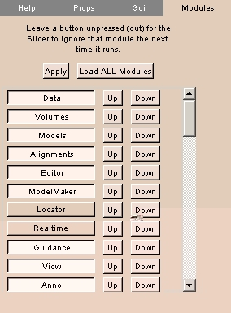 |
- Click the Modules tab. The panel at left appears.
- To load all modules, click Load ALL Modules.
- Toggle each module loaded or not loaded by clicking the module's name in the list.
- To move a module up in the list, click Up next to the module's name.
- To move a module down in the list, click Down next to the module's name.
- Click Apply to use the entered settings.
|
OsteoPlan module
The OsteoPlan module is used by the Massachusetts General Hospital Oral & Maxillofacial Surgery department.
There are four tabs: Landmarks, Cut, Reorient, and Rx.
Realtime module
The Realtime module lets you process in real time the data acquired via the Locator module. You can process the incoming Realtime image with a selected Baseline image to produce a Result image.
There is one tab: Processing.
Processing tab
The Processing tab sets up real-time processing of images acquired via the Locator module.
To use the Processing tab:
| 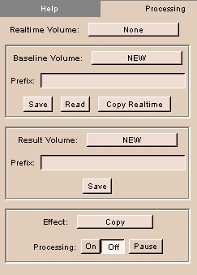 |
- Click the Processing tab. The panel at left appears.
- Click Realtime Volume to select the real-time volume.
- To use an existing baseline image, select the Baseline Volume and enter a Prefix. To save to this volume, click Save. To read from this volume, click Read. To copy the real-time volume to the baseline volume, click Copy Realtime.
- To save the result, select the Result Volume and enter a Prefix. Click Save.
- Select an Effect from the drop-down list.
- Click On to start processing, Off to stop processing, and Pause to pause processing.
|
SessionLog module
The SessionLog module lets you keep a log of Slicer sessions for research and other purposes.
There are two tabs: Start Here and Log.
Start Here tab
The Start Here tab lets you start logging and choose a file to record log entries.
To use the Start Here tab:
| 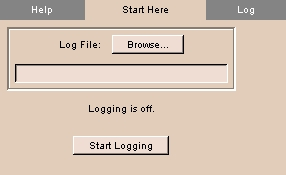 |
- Click the Start Here tab. The panel at left appears.
- Click Log File and browse to select a text file to record log entries in.
- To start logging, click Start Logging.
|
Log tab
The Log tab lets you display the current log.
To use the Log tab:
| 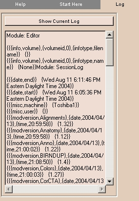 |
- Click the Log tab. The panel at left appears.
- Click Show Current Log to display the current log.
|
Slices module
The Slices module lets you control the selection and display of slices when in 3D view mode.
There is one tab: Controls.
Controls tab
The Controls tab provides the same controls as the 2D Viewer.
To use the Controls tab:
| 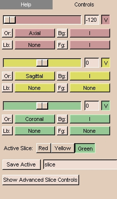 |
- Click the Controls tab. The panel at left appears.
- The controls include:
- There are three 2D windows (red, yellow, and green).
You can select both grayscale and label map images into each of the 2D windows.
For example, Slicer will automatically put the Axial grayscale images into the first (red) 2D window as the background layer.
- In each 2D window, the slider selects which slice of the volume to display.
The numerical field shows the slice number. You can also enter the number of a slice directly in the numerical field.
- The V toggle button controls whether the selected slice is visible in the 3D viewer or not.
- There is an Or (scan order), Bg (background), Fg (foreground),
and Lb (label map) button
for each of the three 2D windows.
- Use Or to change the scan order in each 2D window.
For example, you can use the Axial view in the first 2D window,
the Coronal in the second, and the Saggital in the third window.
Or you can use the Coronal view in the first and the other two views in the other two windows.
Or you can set each view individually, to suit your need.
- Use Bg to select which volume to put in the background layer.
- Use Fg to select a volume for the foreground layer,
which is superimposed over the background layer.
- Use Lb to select label map images for the label map layer,
to display results of a segmentation. Images loaded into the label map layer
will appear as outlines around the structures that were segmented.
(You can use Slicer to create label maps, and also to make models from them.)
- Select the Active Slice by clicking Red, Yellow, or Green.
- Click Save Active to save the active slice. Enter a name in the text field to use for the saved slice.
- Click Show Advanced Slice Controls to change the Zoom and Slice Increment for the active slice.
|
Tester module
The Tester module allows developers to source files as part of the testing process. Developers can make changes to modules, then source the module to see how it works.
There are two tabs: Source and Watch.
Source tab
The Source tab allows selecting modules to source.
To use the Source tab:
| 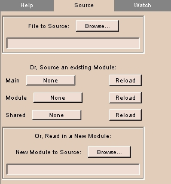 |
- Click the Source tab. The panel at left appears.
- To choose a file to source, click File to Source and browse for the file.
- To load a main module, click Main and select the module from the drop-down list.
- To reload a main module, click Reload next to the main module's name.
- To load a module, click Module and select the module from the drop-down list.
- To reload a module, click Reload next to the module's name.
- To load a shared module, click Shared and select the module from the drop-down list.
- To reload a shared module, click Reload next to the shared module's name.
- To choose a new module to source, click New Module to Source and browse for the file.
|
Watch tab
The Watch tab has not been implemented.
TetraMesh module
The TetraMesh module reads in a tetrahedral mesh, which can be converted into a model in two ways. Assuming that the mesh has integer scalars, surfaces can be extracted, producing one color-coded model for each scalar. Regardless of whether the mesh has integer scalars, edges can be extracted, producing a model consisting of color-coded lines that connect each node.
There are four tabs: Read/Write, Props, Visualize, and View.
Read/Write tab
The Read/Write tab allows reading, writing, and selecting tetrahedral meshes.
To use the Read/Write tab:
| 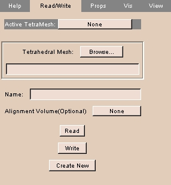 |
- Click the Read/Write tab. The panel at left appears.
- To choose a loaded tetrahedral mesh, click Active TetraMesh and select a mesh from the drop-down list.
- To choose a tetrahedral mesh file, click Tetrahedral Mesh and browse for the file.
- To use a loaded volume for alignment, click Alignment Volume and select the volume from the drop-down list.
- To read the tetrahedral mesh file, click Read. The selected mesh file is read.
- To write a tetrahedral mesh file, click Write. The mesh is written to the selected mesh file.
- To read in a new tetrahedral mesh file, click Create New. A new mesh is read.
|
Props tab
The Props tab controls properties of the tetrahedral mesh.
To use the Props tab:
| 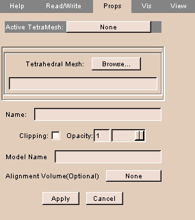 |
- Click the Props tab. The panel at left appears.
- To choose a loaded tetrahedral mesh, click Active TetraMesh and select a mesh from the drop-down list.
- To choose a tetrahedral mesh file, click Tetrahedral Mesh and browse for the file.
- Click Clipping to turn clipping on.
- Use the Opacity slider to adjust the opacity.
- To use a loaded volume for alignment, click Alignment Volume and select the volume from the drop-down list.
- Click Apply to apply the selected properties.
- Click Cancel to cancel the selected properties.
|
Visualize tab
The Visualize tab allows controls how to process the mesh.
To use the Visualize tab:
| 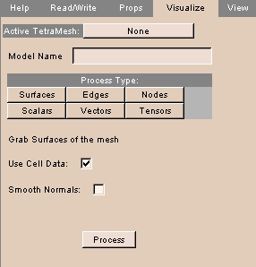 |
- Click the Visualize tab. The panel at left appears.
- To choose a loaded tetrahedral mesh, click Active TetraMesh and select a mesh from the drop-down list.
- There are several options for processing the tetrahedral mesh.
- Click Surface to grab surfaces of the mesh.
- To use cell data as part of the process, click Use Cell Data.
- To smooth normals as part of the process, click Smooth Normals.
- Click Edges to grab edges of the mesh.
- Click Nodes to use nodes of the mesh.
- Enter the Sphere Scaling, which is the sphere placed on the model when you run the correspondence. The calculation for the sphere's radius is .15 multiplied by the scaling factor.
- To skip nodes, enter a value for Keep Every Nth Node.
- Click Scalars to use mesh scalars.
- Enter the Sphere Scaling, which is the sphere placed on the model when you run the correspondence. The calculation for the sphere's radius is .15 multiplied by the scaling factor.
- To skip nodes, enter a value for Keep Every Nth Node.
- Click Vectors to use vectors in the mesh.
- Enter the Arrow Scaling factor.
- To skip nodes, enter a value for Keep Every Nth Node.
- Click Tensors to use tensors in the mesh.
- Enter the Arrow Scaling factor.
- To skip nodes, enter a value for Keep Every Nth Node.
- Click Process to start processing.
|
View tab
The View tab controls viewing the tetrahedral mesh and controlling clipping.
To use the View tab:
| 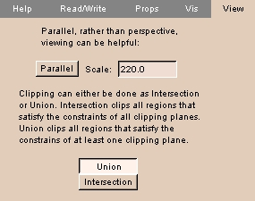 |
- Click the View tab. The panel at left appears.
- Toggle between parallel and perspective view by clicking Parallel.
- Enter a value for the Scale.
- To clip all regions that satisfy the constraints of all clipping planes, click Intersection.
- To clip all regions that satisfy the constraints of at least one clipping plane, click Union.
|
Twin module
The Twin module displays a second copy of the 3D Viewer, which you can configure to appear on a different screen number on UNIX systems. With two graphics cards, they are numbered 0 and 1. This can be useful for a remote viewer, in a classroom situation, or to provide a display during surgery.
There is one tab: Twin.
Twin tab
The Twin tab configures the Twin screen for display.
To use the Twin tab:
| 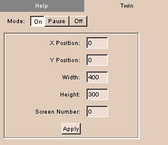 |
- Click the Twin tab. The panel at left appears.
- To turn the Twin screen on, click On. To turn the Twin screen off, click Off. To pause updating the Twin screen, click Pause.
- Enter values for the Twin screen, including X Position, Y Position, Width, Height, and Screen Number (0 or 1, if your computer has two graphics cards).
- Click Apply to use values for the Twin screen.
|
View module
The View module provides controls for changing the appearance of displays in the Viewer window.
This can be useful for medical imaging and for preparing images for publication.
There are four tabs: View, Texture, Fog, and Lights.
To save view options, click File, then click Save Current Options. This will save your options to a file called Options.xml.
View tab
The View tab provides controls for:
- changing the size of the 3D Viewer
- changing the color of the background of the 3D Viewer
- turning on the Closeup Window
- enabling stereo mode
- saving the current view as a graphics file
To use the View tab:
| 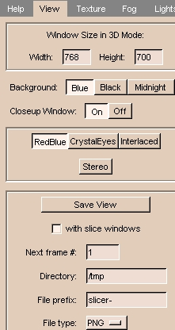 |
- Click the View tab. The panel at left appears.
- To change the size of the 3D Viewer, enter values for Width and Height.
- To change the color of the background of the 3D Viewer, click Blue, Black, or Midnight.
- The Closeup Window magnifies the 2D Viewer window around the mouse cursor.
(This is not available for PCs.)
To turn the Closeup Window on or off, click On or Off.
- Stereo mode allows viewing the 3D Viewer in 3D with red/blue, crystal eyes, or interlaced glasses.
Click Stereo to turn stereo mode on or off. When stereo viewing is on, select the stereo viewing mode by clicking either RedBlue, CrystalEyes, or Interlaced.
- To save the current view as a graphics file, click Save View. The view will be saved when you left-click the 3D Viewer. To save the view whenever the 3D Viewer is rendered, leave Save View selected.
The following options are available:
- To include both the 3D Viewer and the 2D Viewer, select with slice windows. To include only the 3D Viewer, deselect with slice windows.
- Enter the Directory where you want to save the current view as a graphics file.
- Enter the File Prefix of the graphics files.
- Enter the Next frame #, which will be appended to the File Prefix for the next saved file.
- Select the File type for the format of the graphics file. Available formats include:
- BMP
- JPEG
- PNG
- PNM
- PostScript
- TIFF
|
Texture tab
The Texture tab provides controls to render slices in the 3D Viewer, including:
- resolution of the image
- changing the color of the background of the 3D Viewer
- turning on the Closeup Window
- enabling stereo mode
- saving the current view as a graphics file
To use the Texture tab:
| 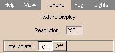 |
- Click the Texture tab. The panel at left appears.
- Enter the Resolution (number of pixels left-to-right and top-to-bottom).
Higher values (up to the resolution of your source images) give better quality. Smaller values render faster.
- Interpolate smoothes the image. To smooth the image, click On.
To see the unsmoothed pixels, click Off.
|
Results of Resolution and Interpolate
| Resolution = 512; Interpolate off |
Resolution = 64; Interpolate off |
Resolution = 64; Interpolate on |
| 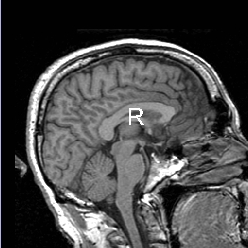 |
|
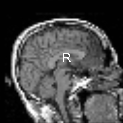 |
Fog tab
The Fog tab lets you add fog to 3D images, which mixes the color of the 3D object with the background color.
This produces a three-dimensional effect that allows users to distinguish structures in the foreground from structures in the background of the image.
To use the Fog tab:
| 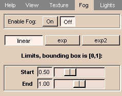 |
- Click the Fog tab. The panel at left appears.
- To enable fog, click On. To disable fog, click Off.
- Select linear, exp, or exp2 to choose how the fog changes with distance.
- Adjust the Start and End sliders to determine where the fog begins and ends.
|
Results of Fog
Lights tab
The Lights tab lets you adjust the lighting of a 3D object.
Usually, the LightKit arrangement of lights lets the user distinguish structures better.
To use the Lights tab:
| 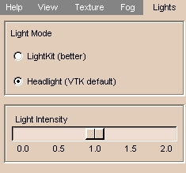 |
- Click the Lights tab. The panel at left appears.
- Select Headlight for simple lighting or LightKit for more realistic lighting.
- Adjust the Light Intensity slider to make the scene brighter or darker.
|
VolRend module
The VolRend module provides controls over rendering volumes.
There are two tabs: Settings and Transfer Functions.
Settings tab
The Settings tab lets you control how to render volumes.
| 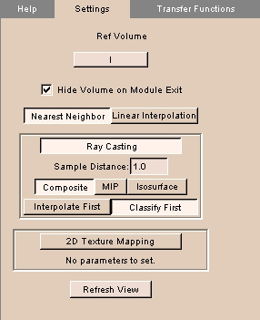 |
- Click the Settings tab. The panel at left appears.
- To choose a loaded reference volume, click Ref Volume and select a volume from the drop-down list.
- To toggle hiding the volume on exiting, click Hide Volume on Module Exit.
- Choose the type of interpolation by clicking Nearest Neighbor or Linear Interpolation.
- Choose the Ray Casting or 2D Texture Mapping technique.
- For Ray Casting:
- Enter the Sample Distance.
- Choose the method of volume rendering by clicking Composite, MIP (maximum intensity projection), or Isosurface.
- Choose whether to Interpolate First or Classify First.
- Click Refresh View to redraw the display of the volume.
|
Transfer Functions tab
The Transfer Functions tab lets you specify color and opacity functions over the volume.
| 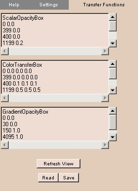 |
- Click the Transfer Functions tab. The panel at left appears.
- The Scalar Opacity Box defines the function that assigns the opacity value for a given voxel value.
- The Color Transfer Box defines the function that assigns the color value for a given voxel value.
- The Gradient Opacity Box defines the opacity gradient, which is multiplied by the Scalar Opacity value to give the final opacity value.
- Click Refresh View to redraw the display of the volume.
- To read in saved transfer functions, click Read and browse to the file.
- To save the current transfer functions, click Save and specify a file name.
|
VolumeMath module
The VolumeMath module does arithmetical, statistical, and logical functions on input volumes.
There are three tabs: Math, Distance, and Logic.
Math tab
The Math tab performs arithmetical and statistical operations on volumes.
| 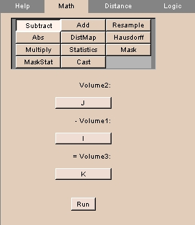 |
- Click the Math tab. The panel at left appears.
- Click the operation to perform, including:
- Click Subtract to subtract the values of one volume from another. Volumes should have the same spacing and number of voxels.
- Click Volume2 to select the volume to subtract from.
- Click Volume1 to select the volume to subtract from Volume2.
- Click Volume3 to select the output volume, or create a new output volume.
- Click Add to add the values of one volume to another. Volumes should have the same spacing and number of voxels.
- Click Volume2 to select one volume to add.
- Click Volume1 to select the other volume to add.
- Click Volume3 to select the output volume, or create a new output volume.
- Click Resample to resample one volume in the coordinates of another.
- Click Resample to select the volume to resample.
- Click in the coordinates of to select the volume whose coordinates to use.
- Click and put the result in to select the output volume, or create a new output volume.
- Click View/change Resampling Params to set resampling parameters, including interpolation mode, origin, extent, and spacing.
- Click Abs to calculate the absolute value of a volume.
- Click Absolute Value to select the volume to calculate.
- Click and put the result in to select the output volume, or create a new output volume.
- Click DistMap to calculate a distance map for a volume.
- Click Distance Map to select the volume to calculate.
- Click and put the result in to select the output volume, or create a new output volume.
- Click Hausdorff to calculate the Hausdorff distance map for two volumes.
- Click V2 to select one volume.
- Click V1 to select the other volume.
- Click and put the result in to select the output volume, or create a new output volume.
- Click Multiply to multiply the values of one volume by another.
- Click Volume2 to select one volume to multiply.
- Click Volume1 to select the other volume to multiply.
- Click Volume3 to select the output volume, or create a new output volume.
- Click Statistics to calculate the minimum, maximum, mean, and standard deviation of the non-zero values of a volume.
- Click Calculate Statistics of to select volume.
- Click Mask to mask one volume with a label map.
- Click Volume to Mask to select the volume to mask.
- Click Label Map to select the label map.
- Click Masked Output to select the output volume, or create a new output volume.
- Click Mask to select the color for the mask.
- Click MaskStat to calculate statistics of a volume masked with a label map.
- Click Volume to Mask to select the volume to mask.
- Click Label Map to select the label map.
- Click Masked Output to select the output volume, or create a new output volume.
- Click Mask to select the color for the mask.
- Click Browse to select a file to save the statistics.
- Click Cast to output values of the volume in various forms.
- Click Volume to Cast to select the volume.
- Click Cast Output to select the output volume, or create a new output volume.
- Click Output Type to form of the output, including Char, UnsignedChar, Short, UnsignedShort, Int, UnsignedInt, Long, UnsignedLong, Float, and Double.
- Click Run to perform the selected calculation.
|
Distance tab
The Distance tab calculates distance between voxels. This tab is not operational.
Logic tab
The Logic tab performs a logical AND between volumes.
| 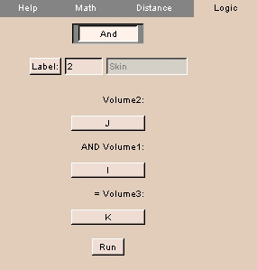 |
- Click the Logic tab. The panel at left appears.
- Click Label to select the label value to operate on.
- Click Volume2 to select one volume.
- Click Volume1 to select the other volume to AND.
- Click Volume3 to select the output volume, or create a new output volume.
|